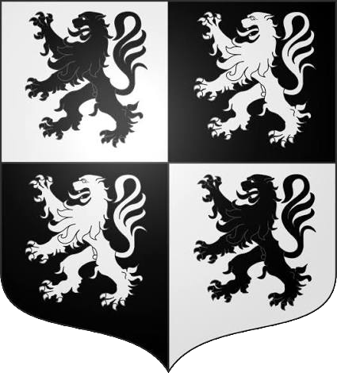
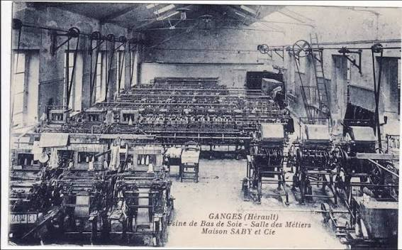
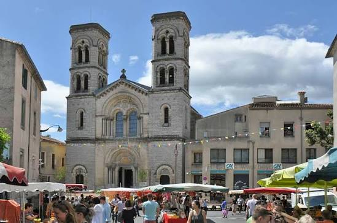

Soierie & Bas de
Soie de GangesLa capitale languedocienne du bas de soie de luxe


⟹ Savoir-Faire & Artisanat ⟸

L'histoire de Ganges est inséparable de la soie. Située à la porte méridionale des Cévennes, au contact de l'Hérault, du Rieutord et de la Vis, la ville occupe depuis longtemps une position de carrefour entre montagnes cévenoles, plaine languedocienne et routes vers Nîmes et Montpellier.
Bien avant l'industrialisation, les habitants vivent de l'agriculture, de l'élevage, du commerce et des activités artisanales. Mais à partir des XVIe et XVIIe siècles, la diffusion du mûrier et de l'élevage du ver à soie transforme profondément les campagnes cévenoles.
La sériciculture devient une économie familiale. Dans les mas et villages, on élève les vers à soie — les « magnans » — dans les magnaneries. Les feuilles de mûrier les nourrissent jusqu'à la formation du cocon. Cette activité mobilise une grande partie des familles rurales et complète les revenus agricoles.
Les cocons doivent ensuite être dévidés pour produire le fil. Des filatures se développent dans les vallées, profitant de la main-d'œuvre et de l'énergie hydraulique. Le fil est ensuite mouliné, teint, tissé ou tricoté selon sa destination.

Au XVIIIe siècle, Ganges s'impose surtout dans la bonneterie. La ville devient l'un des grands centres de fabrication de bas de soie des Cévennes. Les archives du commerce languedocien montrent que les fabricants gangeois doivent déjà défendre leurs intérêts face aux puissantes corporations de Lyon.
En 1747, des correspondances administratives évoquent même la fabrique de bas de Ganges comme l'une des plus florissantes d'Europe et soulignent la diffusion de sa réputation bien au-delà du Languedoc. La production est tournée vers des marchés lointains et vers une clientèle aisée.
Le système de production associe ateliers urbains et travail à domicile. Des entrepreneurs fournissent la matière première et passent commande à des ouvriers spécialisés travaillant parfois chez eux. La finesse de la maille exige une grande dextérité. Ganges se spécialise progressivement dans les articles haut de gamme.
Au XIXe siècle, la Révolution industrielle transforme toute la filière. Les filatures se mécanisent, les moulinages se développent et les métiers de bonneterie gagnent en productivité. Des familles d'entrepreneurs comme les Carrière structurent de véritables entreprises industrielles.
La main-d'œuvre est très largement féminine. Les fileuses travaillent de longues journées devant les bassines d'eau chaude servant à dévider les cocons. Le travail est éprouvant : chaleur, humidité, gestes répétitifs et salaires faibles caractérisent la vie des ateliers.
À la fin du XIXe siècle, l'importance de cette économie est considérable. Une enquête de 1896 recense dans le canton de Ganges des milliers de personnes employées dans la sériciculture, la filature, le moulinage et la bonneterie. L'industrie de la soie façonne alors toute la société locale.
Les crises de la sériciculture n'épargnent pas la région. Les maladies du ver à soie, notamment la pébrine, fragilisent les élevages au XIXe siècle. Les travaux de Louis Pasteur dans les Cévennes contribuent à mieux comprendre ces maladies, mais la concurrence internationale et l'évolution des matières premières modifient progressivement le système ancien.
1906 marque un épisode majeur de l'histoire sociale de Ganges. Une grande grève éclate dans les filatures. Les archives communales indiquent que plusieurs centaines d'ouvrières, parmi lesquelles des enfants et de très jeunes travailleuses, cessent le travail. Le mouvement s'étend rapidement aux communes voisines et devient l'une des plus importantes grèves de fileuses de l'histoire cévenole.
Cette mobilisation révèle la dureté des conditions de travail et la place décisive des femmes dans l'économie de la soie. Elle s'inscrit dans un mouvement plus large d'organisation ouvrière qui touche les vallées cévenoles au début du XXe siècle.
La bonneterie permet cependant à Ganges de prolonger son aventure textile. Alors que la filature traditionnelle décline, la fabrication de bas reste très dynamique. Dans l'entre-deux-guerres, Ganges demeure un centre reconnu pour les bas fins destinés à une clientèle élégante.
Après la Seconde Guerre mondiale, un bouleversement technique survient : le nylon. Plus résistant et plus facile d'entretien que la soie naturelle, il conquiert rapidement le marché. Les entreprises gangeoises s'adaptent et produisent à leur tour des bas synthétiques.
Des marques comme Jean Cévennes témoignent de cette reconversion. En quelques années, la soie naturelle cède presque entièrement la place à la rayonne puis au nylon. La bonneterie reste donc vivante, mais elle n'utilise plus nécessairement la matière qui avait créé sa renommée.
À partir des années 1960, la concurrence et les mutations de la mode entraînent un déclin progressif. Les ateliers ferment ou se regroupent. Les collants remplacent les bas traditionnels, la production se déplace et l'industrie textile cesse peu à peu d'être le moteur économique de la ville.

Aujourd'hui, l'héritage de cette épopée demeure dans les archives, les bâtiments industriels, les collections de bas anciens, les anciennes maisons de fabricants et la mémoire familiale. Le Musée cévenol du Vigan conserve notamment de nombreux objets liés à la bonneterie régionale.
La soie n'est donc pas un simple épisode économique de Ganges : elle a façonné l'urbanisme, les fortunes locales, le travail féminin, les conflits sociaux et l'identité même de la ville pendant près de trois siècles.
À Ganges, l'histoire de la soie est aussi celle de milliers de femmes : magnanières, fileuses, ouvrières et bonnetières dont le travail a porté la réputation de la ville bien au-delà des Cévennes.
Synthèse historique, industrielle et sociale